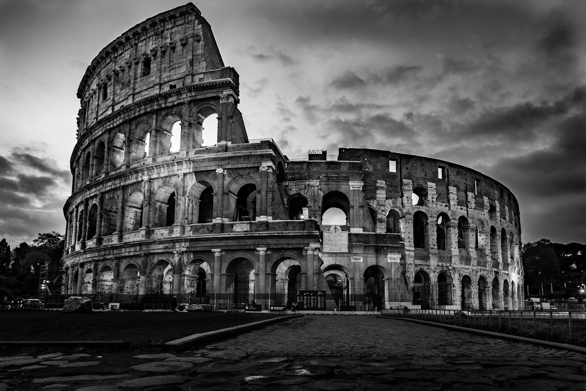
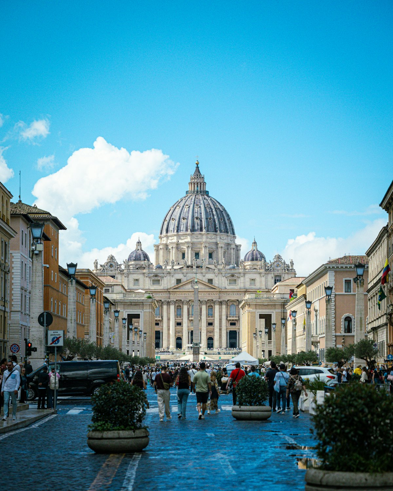
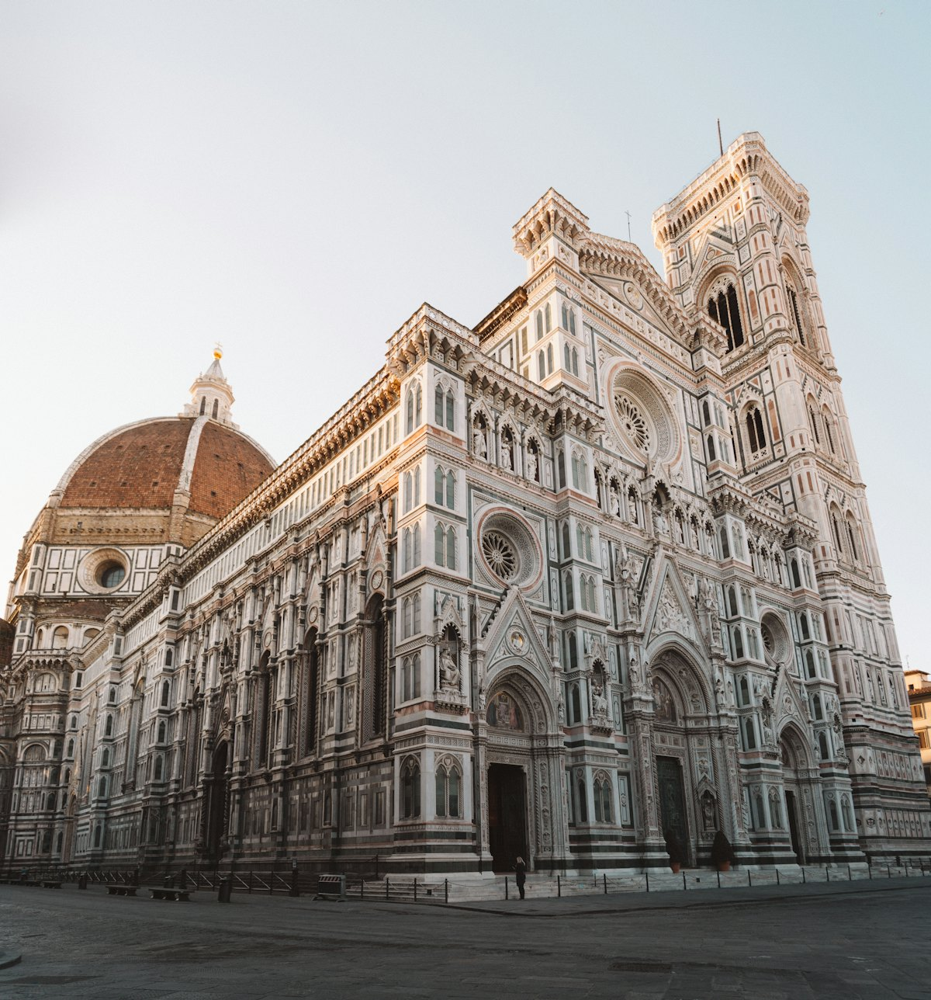
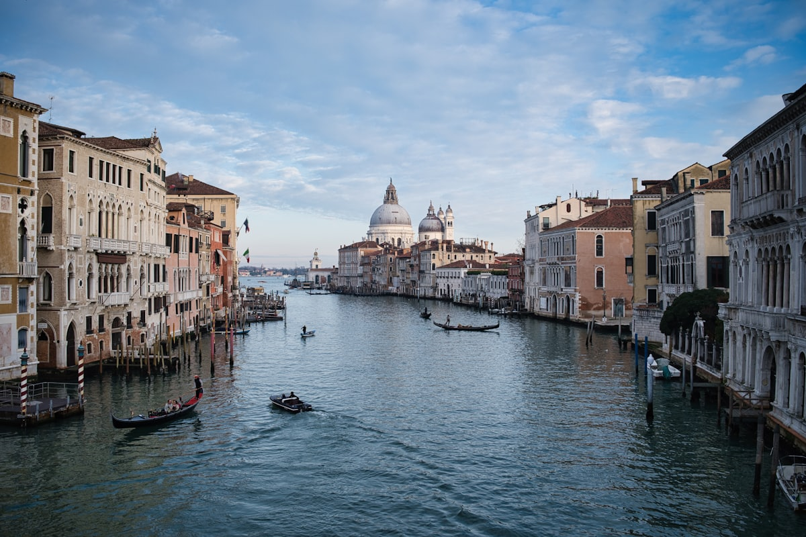
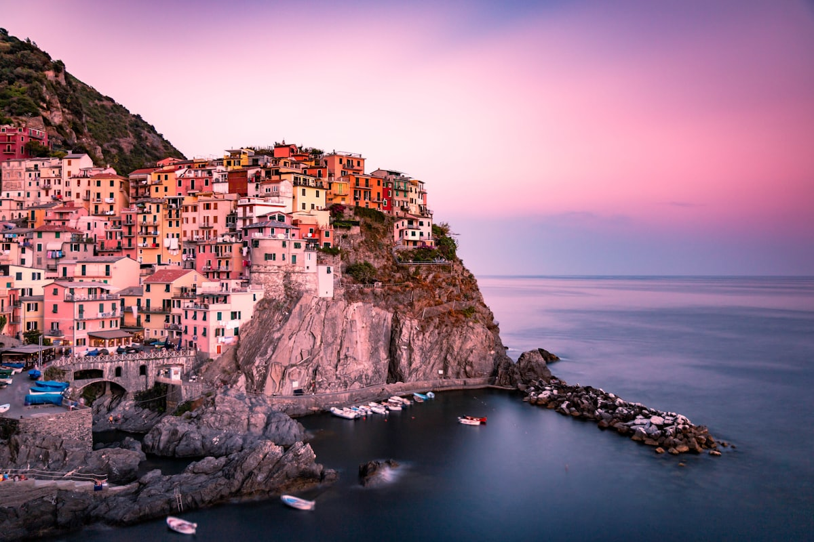
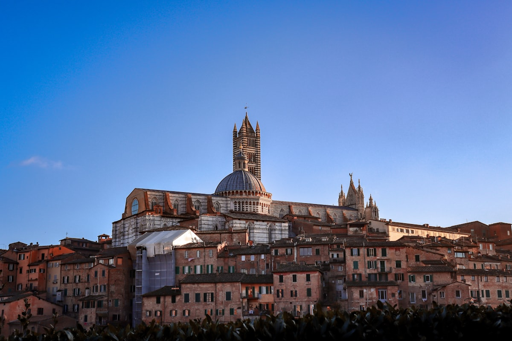
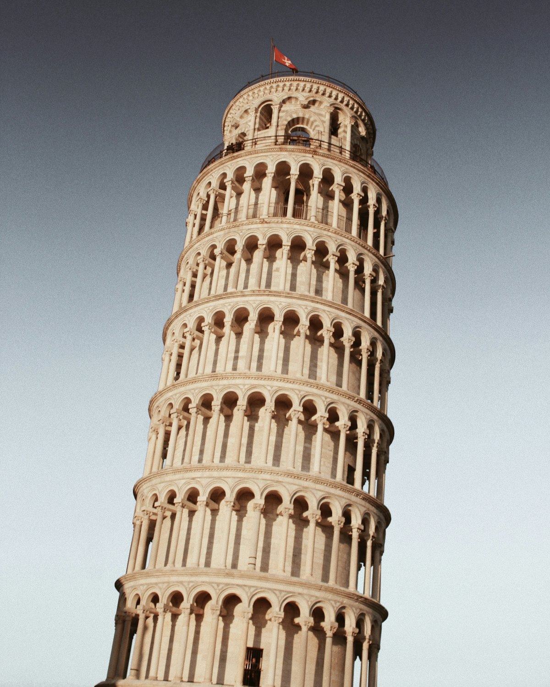
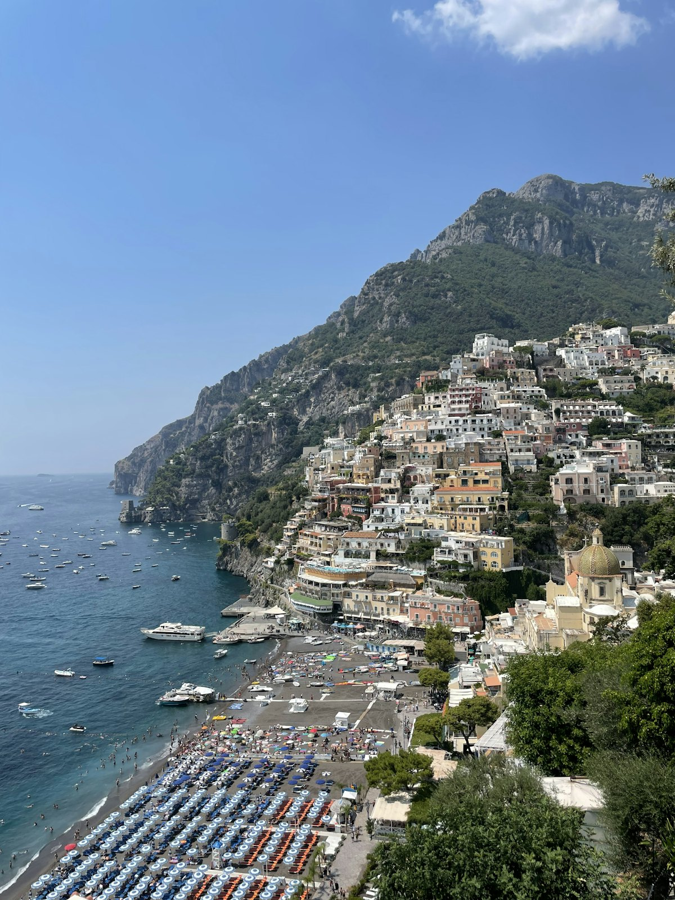

| 事项 | 结论 |
|---|---|
| 事项 | 结论 |
| 签证（最关键） | 申根签证，在意大利签证中心递交；一般给 15–30 天停留，行程表 + 机票 + 保险 + 银行流水备齐 |
| 推荐方案 | 罗马 4 天（含梵蒂冈）→ 庞贝/阿马尔菲 2 天 → 佛罗伦萨 3 天 → 托斯卡纳 2 天 → 五渔村 1–2 天 → 米兰 2 天 → 威尼斯 3 天 → 返程 |
| 返程约束 | 第 20 天从罗马✈北京直飞，航班每天 1–2 班；也可从米兰/威尼斯经转机返京 |
| 行程链 | 罗马 → 庞贝/阿马尔菲 → 佛罗伦萨 → 托斯卡纳 → 五渔村 → 米兰 → 威尼斯 → 返程 |
| 预算（人均） | 经济 25000–35000 ／ 标准 45000–60000 ／ 舒适 80000–120000（人民币） |
| 三件提前事 | ① 办申根签（提前 1–2 个月）② 订高铁票（提前 60–90 天便宜很多）③ 订梵蒂冈博物馆/乌菲兹等热门门票 |
| 季节提醒 | 4–6 月与 9–10 月最佳；7–8 月暴晒且热门景点排队 2h+；12–2 月淡季便宜但部分海岸交通班次少 |
| 支付 | 欧元现金 + 信用卡（Visa/Master 通用，多数地方可无接触）；小额场景用现金 |
以下为 20 天 19 晚的推荐节奏：先南后北绕一个大环线，高铁衔接为主。每日主景点 ≤2 个，罗马、佛罗伦萨、威尼斯三城尽量各住 2–3 晚不赶路。
| 日期 | 行程 | 过夜地 | 主题 |
|---|---|---|---|
| D1 抵罗马 | 北京✈罗马（菲乌米奇诺约 11.5h），入住市中心，晚上散步看斗兽场夜景 | 罗马 | 抵达+预热 |
| D2 | 斗兽场 + 古罗马广场 + 帕拉蒂尼山（联票 24h 有效） | 罗马 | 古罗马一日 |
| D3 | 梵蒂冈：圣彼得大教堂登顶 → 梵蒂冈博物馆+西斯廷礼拜堂 | 罗马 | 梵蒂冈日 |
| D4 | 罗马漫步：许愿池 → 万神殿 → 纳沃纳广场 → 西班牙广场 | 罗马 | 巴洛克罗马 |
| D5 | 高铁到那不勒斯：庞贝古城半日（含考古标本），宿那不勒斯 | 那不勒斯 | 庞贝古城日 |
| D6 | 阿马尔菲海岸：波西塔诺 → 阿马尔菲镇（Sita 巴士/游船），返那不勒斯 | 那不勒斯 | 地中海海岸日 |
| D7 | 高铁到佛罗伦萨（约 3h）：圣母百花大教堂登顶 + 乔托钟楼 + 领主广场 | 佛罗伦萨 | 文艺复兴初访 |
| D8 | 乌菲兹美术馆（提香/波提切利/达芬奇）+ 老桥 + 米开朗琪罗广场日落 | 佛罗伦萨 | 艺术与老桥 |
| D9 | 托斯卡纳一日：锡耶纳田野广场 + 锡耶纳大教堂，宿锡耶纳 | 锡耶纳 | 中世纪古城 |
| D10 | 圣吉米尼亚诺（塔楼之城）+ 基安蒂酒庄品酒，返佛罗伦萨 | 佛罗伦萨 | 托斯卡纳乡村 |
| D11 | 比萨一日：奇迹广场 + 斜塔登顶（需提前订票） | 佛罗伦萨 | 比萨斜塔日 |
| D12 | 火车到拉斯佩齐亚：五渔村小火车串村（马纳罗拉/韦尔纳扎），宿五渔村 | 五渔村 | 悬崖五村 |
| D13 | 五渔村徒步或出海：爱之路/悬崖步道，傍晚出发到米兰 | 米兰 | 海岸收尾 |
| D14 | 米兰：米兰大教堂登顶 + 埃马努埃莱二世拱廊 + 斯福尔扎城堡 | 米兰 | 米兰日 |
| D15 | 米兰购物/博物馆日：布雷拉画廊、达芬奇《最后的晚餐》（需提前 3 个月抢票），下午高铁到威尼斯 | 威尼斯 | 转场威尼斯 |
| D16 | 圣马可广场 + 圣马可大教堂 + 叹息桥 + 总督府 | 威尼斯 | 水城初访 |
| D17 | 大运河水上巴士 1 号线巡游 + 里亚托桥 + 贡多拉体验 | 威尼斯 | 大运河日 |
| D18 | 穆拉诺玻璃岛 + 布拉诺彩色岛（水上巴士半日游） | 威尼斯 | 离岛日 |
| D19 | 威尼斯自由活动（学院桥/安康圣母教堂），傍晚高铁回罗马（约 4h） | 罗马 | 返程中转 |
| D20 返程 | 罗马✈北京（直飞约 11.5h），菲乌米奇诺机场退税+免税店，到家休息 | — | 收尾 |
以下为 20 天全程的逐小时执行时间线，可当作「当天打开照着走」的清单。标注 ※ 的可选项视体力与天气取舍。
| 时间 | 事项 |
|---|---|
| 13:00–16:30 | 北京✈罗马菲乌米奇诺（FCO）约 11.5h。机场快线 Leonardo Express 约 30min 到特米尼站（14 欧元） |
| 17:00–18:30 | 入住市中心酒店（推荐特米尼站或西班牙广场附近），附近买水/零食补给 |
| 19:00–20:30 | 步行或地铁到斗兽场外围散步看夜景（免费），罗马夜色初印象 |
| 20:30 | 晚餐：附近意面馆（Fettuccine Alfredo / 玛格丽特披萨），早点休息倒时差 |
| 时间 | 事项 |
|---|---|
| 08:30 | 地铁 B 线到 Colosseo 站，开门前排斗兽场（提前官网订票免排队） |
| 09:00–11:30 | 斗兽场（标准票约 18 欧元，含地下层约 23 欧元）：角斗士竞技场、地下通道与看台结构 |
| 11:30–13:30 | 古罗马广场（联票内含）：凯旋门、元老院、维斯塔贞女院遗迹 |
| 13:30–14:30 | 午餐：附近三明治吧/意式快餐 |
| 14:30–16:30 | 帕拉蒂尼山（联票内含）：罗马建城传说之地，俯瞰古罗马广场全景 |
| 17:00–18:30 | 真理之口（免费，排队拍照），提拉米苏店歇脚 |
| 时间 | 事项 |
|---|---|
| 08:00 | 地铁 A 线 Ottaviano 站步行到梵蒂冈，圣彼得广场清晨人少 |
| 08:30–11:00 | 圣彼得大教堂（免费）：先登顶（8 欧元，电梯+步行）俯瞰钥匙状广场，再参观大殿与米开朗基罗《哀悼基督》 |
| 11:00–13:30 | 梵蒂冈博物馆（约 20 欧元，提前订票）：拉斐尔画室、地图长廊，最后进西斯廷礼拜堂看米开朗基罗《创世纪》 |
| 13:30–14:30 | 午餐：博物馆出口附近简餐或梵蒂冈城墙外披萨店 |
| 15:00–17:00 | 圣天使堡（约 13 欧元，可只外观）：哈德良陵墓+天使桥，沿台伯河散步 |
| 18:00 | 晚餐：Trastevere 街区（特拉斯提弗列）罗马本地餐馆，主打碳烤牛排/意面 |
| 时间 | 事项 |
|---|---|
| 08:30–09:30 | 许愿池（特雷维喷泉）（免费）：8 点前人少，背身投硬币许愿 |
| 09:30–11:00 | 万神殿（免费）：两千年前的穹顶，拉斐尔长眠于此 |
| 11:00–13:00 | 纳沃纳广场（免费）：贝尔尼尼四河喷泉 + 广场三座喷泉 |
| 13:00–14:00 | 午餐：纳沃纳附近 Suppli（炸饭团）或意面 |
| 14:30–17:00 | 西班牙广场（免费）：破船喷泉 + 西班牙阶梯（禁止坐台阶），奢侈品街逛橱窗 |
| 17:30–19:00 | 自由时间：波格赛美术馆（需预约）或卡拉卡拉浴场（约 13 欧元）二选一 |
| 时间 | 事项 |
|---|---|
| 08:30 | 罗马特米尼站坐高铁 Frecciarossa 到那不勒斯中央站（约 1h10min） |
| 09:45–11:00 | 那不勒斯寄存行李，转 Circumvesuviana 火车或维苏威环线到庞贝（约 35min） |
| 11:30–15:30 | 庞贝古城（约 18 欧元）：角斗士训练场、广场、大剧场、壁画宅邸，解说器或导游讲解更佳 |
| 15:30–17:00 | 返那不勒斯，拿行李入住酒店，沿维苏威方向远眺（天气好可见火山） |
| 18:30 | 那不勒斯晚餐：玛格丽特披萨发源地之一，Sorbillo 或 Da Michele 排队店 |
| 时间 | 事项 |
|---|---|
| 08:00 | 那不勒斯乘 Sita 巴士/包车沿海岸线前往波西塔诺（约 1.5h，山路多弯） |
| 09:30–12:00 | 波西塔诺（免费）：悬崖彩色房屋 + 圣母升天教堂，从码头仰拍经典机位 |
| 12:00–13:00 | 午餐：海鲜意面 + 柠檬酒（Limoncello） |
| 13:30–15:30 | 乘巴士到 阿马尔菲镇（免费）：阿马尔菲大教堂阶梯广场、纸博物馆（约 4 欧元） |
| 15:30–17:30 | 海岸线往返巴士看最美弯道（建议坐右侧靠窗），返回那不勒斯 |
| 19:00 | 那不勒斯晚餐：海鲜烩饭，为次日高铁囤能量 |
| 时间 | 事项 |
|---|---|
| 08:30 | 那不勒斯中央站高铁到佛罗伦萨 SMN 站（约 3h，提前订票约 40–70 欧元） |
| 12:00–13:30 | 入住佛罗伦萨老城酒店，午餐：托斯卡纳牛肚包（Lampredotto） |
| 14:00–17:00 | 圣母百花大教堂：先登乔托钟楼（联票含），再登大教堂穹顶看布努内莱斯基红瓦穹顶结构，参观洗礼堂金门 |
| 17:30–19:00 | 领主广场（免费）：露天雕塑博物馆，海神喷泉与大卫像复制品 |
| 19:30 | 晚餐：佛罗伦萨牛排（Bistecca alla Fiorentina）或中央市场夜市 |
| 时间 | 事项 |
|---|---|
| 08:30 | 提前 15min 到乌菲兹美术馆门口（预约时段入场） |
| 09:00–12:30 | 乌菲兹美术馆（约 12–25 欧元）：波提切利《维纳斯的诞生》《春》、达芬奇《受胎告知》、提香 |
| 12:30–13:30 | 午餐：老桥附近托斯卡纳意面/中央市场 Panini |
| 14:00–16:00 | 老桥（免费）：欧洲最古老石桥之一，珠宝店橱窗，桥中段视野好 |
| 16:30–18:00 | 米开朗琪罗广场（免费）：爬上坡看佛罗伦萨全景，红衣主教教堂与旧宫同框 |
| 18:30 | 晚餐：学院美术馆附近或老城小巷家庭餐馆 |
| 时间 | 事项 |
|---|---|
| 09:00 | 佛罗伦萨乘地区火车到锡耶纳（约 1h40min，或大巴 1h15min） |
| 10:45–13:00 | 田野广场（Piazza del Campo）（免费）：贝壳形广场，世界遗产，爬曼吉亚钟楼（约 10 欧元）俯瞰全城 |
| 13:00–14:00 | 午餐：锡耶纳烤野猪肉/意面，广场边咖啡馆喝浓缩 |
| 14:30–16:30 | 锡耶纳大教堂（约 12–15 欧元，可含地宫与登顶）：黑白大理石条纹立面+皮科洛米尼图书馆壁画 |
| 17:00 | 返佛罗伦萨（晚上班次多），宿佛罗伦萨 |
| 时间 | 事项 |
|---|---|
| 08:30 | 从锡耶纳/佛罗伦萨参加一日游或自驾，前往圣吉米尼亚诺（车程约 1h） |
| 09:30–12:30 | 圣吉米尼亚诺（免费）：中世纪塔楼之城，水井广场，登塔（约 8 欧元）看 14 座塔楼天际线 |
| 12:30–14:00 | 午餐：托斯卡纳乡村餐馆（白豆+橄榄油+基安蒂酒） |
| 14:30–16:30 | 基安蒂酒庄品酒：红葡萄酒 Chianti Classico 品鉴 + 葡萄园参观（约 15–25 欧元/人） |
| 17:00–19:00 | 返回佛罗伦萨，日落前在米开朗琪罗广场再看一眼城市全景 |
| 时间 | 事项 |
|---|---|
| 08:30 | 佛罗伦萨乘地区火车到比萨中央站（约 1h） |
| 09:45–13:00 | 奇迹广场：斜塔（登塔约 20 欧元，限时 30min 提前订）、比萨大教堂、洗礼堂，经典「推塔」拍照位 |
| 13:00–14:00 | 午餐：比萨老城意面或路边披萨角 |
| 14:00–15:30 | 阿尔诺河散步 / 骑士广场（免费），比萨大学周边咖啡馆 |
| 15:30–17:30 | 返佛罗伦萨，自由时间逛药妆店/中央市场买伴手礼 |
| 时间 | 事项 |
|---|---|
| 08:30 | 佛罗伦萨乘火车到拉斯佩齐亚（La Spezia，约 2h，中转比萨） |
| 10:45–12:00 | 购买五渔村火车通票（约 18–25 欧元/天），先到马纳罗拉（Manarola）：悬崖彩色房经典机位 |
| 12:00–13:00 | 午餐：渔村海鲜意面/炸海鲜（Fritto Misto） |
| 13:30–16:00 | 韦尔纳扎（Vernazza）：海湾+古堡，蒙特罗索（Monterosso）：五村最大海滩，可下海 |
| 16:00–17:30 | 火车串科尔尼利亚/里奥马焦雷看海岸线，宿蒙特罗索或马纳罗拉 |
| 时间 | 事项 |
|---|---|
| 08:00–10:30 | 选择一段经典海岸步道徒步（如蒙特罗索—韦尔纳扎段约 1.5h），看悬崖与蔚蓝海岸 |
| 10:30–12:00 | 回渔村小镇咖啡 + 买当地香蒜酱/橄榄油伴手礼 |
| 12:00–13:00 | 午餐后乘火车北上（拉斯佩齐亚→热那亚→米兰，约 3.5–4h） |
| 16:30–18:00 | 入住米兰，地铁到多莫广场初见米兰大教堂（哥特式尖塔群） |
| 18:30 | 晚餐：米兰烩饭/意式饺子，晚上看埃马努埃莱二世拱廊夜景 |
| 时间 | 事项 |
|---|---|
| 08:30 | 地铁 Duomo 站到米兰大教堂，开门即登顶 |
| 09:00–11:30 | 米兰大教堂（教堂免费，登顶电梯约 15–20 欧元）：哥特式尖塔群+屋脊雕塑，晴天可望阿尔卑斯山 |
| 11:30–13:00 | 埃马努埃莱二世拱廊（免费）：玻璃穹顶购物长廊，米兰经典地标 |
| 13:00–14:00 | 午餐：米兰烩饭/帕尼尼 |
| 14:30–17:00 | 斯福尔扎城堡（城堡免费，博物馆约 5–8 欧元）：米开朗基罗《哀悼基督》真迹，森皮奥内公园散步 |
| 18:00 | 晚餐：布雷拉区街头小馆，或看一场歌剧/买球票（若与档期吻合） |
| 时间 | 事项 |
|---|---|
| 08:30–11:00 | 自由安排：布雷拉画廊（约 15 欧元）或《最后的晚餐》（若已订票，需按预约时间） |
| 11:30–12:30 | 午餐后从米兰中央站乘高铁到威尼斯梅斯特雷（约 2.5h） |
| 13:30 | 梅斯特雷转跨海大桥巴士/火车到威尼斯本岛，入住圣马可广场附近或朱代卡 |
| 15:00–17:30 | 第一次乘坐水上巴士 1 号线熟悉大运河：里亚托桥—学院桥—圣马可，全程约 1h |
| 18:30 | 晚餐：威尼斯墨鱼面（Spaghetti al Nero di Seppia）+ 运河边夜景 |
| 时间 | 事项 |
|---|---|
| 08:30 | 圣马可广场清晨：晨光中拍鸽子与钟楼（旺季 9 点后旅行团涌入） |
| 09:00–11:30 | 圣马可大教堂（免费，登顶约 8 欧元）：金色马赛克穹顶，顶层阳台眺望广场 |
| 11:30–13:00 | 总督府 + 叹息桥（联票约 25 欧元）：哥特宫殿与囚犯过桥历史，可含密室走廊 |
| 13:00–14:00 | 午餐：广场边小馆或巷子里墨鱼面 |
| 14:30–17:00 | 自由活动：钟楼登顶（约 10 欧元）/ 圣马可图书馆 / 科雷尔博物馆（约 25 欧元） |
| 18:00 | 黄昏时再走一遍叹息桥—学院桥，夕阳染金大运河 |
| 时间 | 事项 |
|---|---|
| 08:30 | 里亚托桥早市（鱼市+果蔬市场）看威尼斯烟火气 |
| 09:30–12:00 | 里亚托桥（免费）：大运河最著名桥，两岸商户，桥顶俯瞰河道 |
| 12:00–14:00 | 大运河水上巴士巡游（通票含）：从圣马可坐到火车站方向，全程看 170 多座宫殿立面 |
| 14:00–15:00 | 午餐：运河边午餐或市场附近意面 |
| 15:30–17:30 | 贡多拉（白天 30min 官方价约 80–100 欧元/船）：选小巷水道更便宜也更出片，和船夫确认价格再上船 |
| 18:30 | 晚餐：威尼斯海鲜烩饭，宿本岛 |
| 时间 | 事项 |
|---|---|
| 08:30 | 水上巴士 3 号线/12 号线从圣马可出发前往穆拉诺（Murano，约 20min） |
| 09:00–11:00 | 穆拉诺玻璃岛（免费）：参观玻璃工坊吹制演示，逛玻璃博物馆（约 10 欧元） |
| 11:00–12:00 | 水上巴士 12 号线到布拉诺（Burano，约 30min） |
| 12:00–14:00 | 布拉诺彩色岛（免费）：糖果色房屋，蕾丝博物馆（约 5 欧元），午餐：海鲜炸物+普罗塞克 |
| 14:30–17:00 | 返程回威尼斯本岛，途经托切罗岛（可选），下午自由休息或补货 |
| 18:30 | 晚餐：本岛小巷餐厅最后一顿威尼斯海鲜 |
| 时间 | 事项 |
|---|---|
| 08:30–10:00 | 上午自由活动：学院桥（看大运河最美视角）/ 安康圣母教堂，最后拍一次晨光水城 |
| 10:00–11:00 | 回酒店退房，水上巴士到圣卢西亚站 |
| 11:30 | 圣卢西亚（Venezia S.Lucia）站乘高铁到罗马特米尼（约 3h50min） |
| 15:30–17:30 | 入住罗马机场附近或市郊酒店（次日航班方便），傍晚特米尼周边轻食 |
| 18:30 | 晚餐：罗马最后一顿（Carbonara 蛋酱面发源地），收拾行李 |
| 时间 | 事项 |
|---|---|
| 08:00–10:00 | 退房，坐 Leonardo Express 机场快线到菲乌米奇诺（约 30min，14 欧元） |
| 10:00–12:00 | 办理值机与退税（Global Blue/Planet 柜台，购满 154.94 欧元可退 12% 左右） |
| 12:00–13:30 | 机场午餐：意面/披萨收官，免税店补货咖啡与巧克力 |
| 14:00–15:30 | 罗马✈北京（直飞约 11.5h，国航/南航） |
| 次日 09:00 | 抵北京大兴/首都机场，入境回家 |
必去（必去）/ 顺路（顺路）/ 可跳过（可跳过）。

必去
必去
必去
必去
必去
必去
顺路图片为 Unsplash 主题图（罗马斗兽场、圣彼得大教堂、圣母百花、威尼斯运河、五渔村、锡耶纳、比萨斜塔、阿马尔菲均为意大利实景），用于页面配图。更多免费景点：许愿池、万神殿、纳沃纳广场、西班牙广场、老桥、圣马可广场。
点击左侧节点可在地图上定位；点击地图 marker 会高亮对应节点。坐标为 WGS-84 转 GCJ-02 纠偏后标注。
以下为单人、不含购物的估算，人民币计价；出发地基准北京。汇率按 1 欧元 ≈ 7.8 元人民币估算。往返机票按直飞淡季 5500–7500 元计。当地小额消费用欧元现金，大额刷卡。
| 项目 | 经济（25000–35000） | 标准（45000–60000） | 舒适（80000–120000） |
|---|---|---|---|
| 往返机票 | 北京⇄罗马 5500–7000 | 含内陆高铁全段 6500–8000 | 直飞商务/灵活 20000–35000 |
| 住宿（19 晚） | 青旅/民宿 300–500/晚 | 三星级/民宿 600–1000/晚 | 四五星/古迹酒店 1500–3000/晚 |
| 交通 | 高铁+巴士 3500–4500 | 高铁二等+水上通票 5000–6500 | 高铁一等/包车托斯卡纳 12000–20000 |
| 门票 | 核心景点约 2000–3000 | 含博物馆/登顶/通票约 4000–6000 | 全含+私导+演出约 10000–15000 |
| 餐饮（20 天） | 超市+意面简餐 5000–6500 | 正常下馆子 8000–10000 | 米其林/米其林推荐 18000–30000 |
带娃推荐：罗马砍掉帕拉蒂尼山改为卡比托利欧博物馆+博尔盖塞公园；庞贝换那不勒斯海洋馆+蛋堡（城堡免费）；威尼斯离岛和贡多拉保留（孩子最爱），米兰加达芬奇科技馆。意大利餐馆普遍对儿童友好，5 岁以下多数免门票。步行量大，推车选威尼斯本岛以外区域。
夏季（7–8 月）：阿马尔菲与五渔村人山人海，改成清晨 8 点前上岛；每天上午排景点、下午躲烈日，加锡拉库萨或西西里陶尔米纳作为补充（需另加 3 天）。冬季（12–2 月）：砍掉阿马尔菲与五渔村的海上项目，改在罗马、佛罗伦萨、威尼斯三城慢游 + 北部多洛米蒂滑雪（需租车）。
| 方式 | 时长 | 参考价 | 备注 |
|---|---|---|---|
| 直飞（推荐） | 北京→罗马约 11.5–12h | 往返 5500–7500 元 | 国航/南航/意大利航空（ITA），罗马菲乌米奇诺 |
| 转机 | 14–20h | 4500–6500 元 | 经阿布扎比/迪拜/多哈/伊斯坦布尔，便宜但费时 |
| 国际铁路/邮轮 | — | — | 中国到欧洲无直连铁路，只能飞机；邮轮为欧洲境内可选 |
| 区域 | 价格/晚 | 优点 | 短板 |
|---|---|---|---|
| 罗马·特米尼站周边 | 经济 300–500 / 标准 500–800 | 机场快线与高铁都从这里出发 | 周边街道晚间接头较多 |
| 罗马·西班牙广场/万神殿 | 标准 700–1200 / 舒适 1500+ | 步行覆盖核心景点 | 旺季贵且房间小 |
| 佛罗伦萨·老城（SMN 站北） | 经济 350–550 / 标准 600–1000 | 步行到百花大教堂 10min | 老建筑隔音一般 |
| 威尼斯·圣马可/朱代卡 | 经济 400–600 / 标准 800–1500 | 水城核心，推窗见运河 | 拖行李过桥累，价格最高 |
| 米兰·多莫/布雷拉 | 经济 350–500 / 标准 600–900 | 大教堂与购物近 | 地铁站远一点的更便宜 |
| 五渔村·蒙特罗索/马纳罗拉 | 标准 700–1200 | 海景与徒步便利 | 旺季难订且贵，需提前 1 个月 |